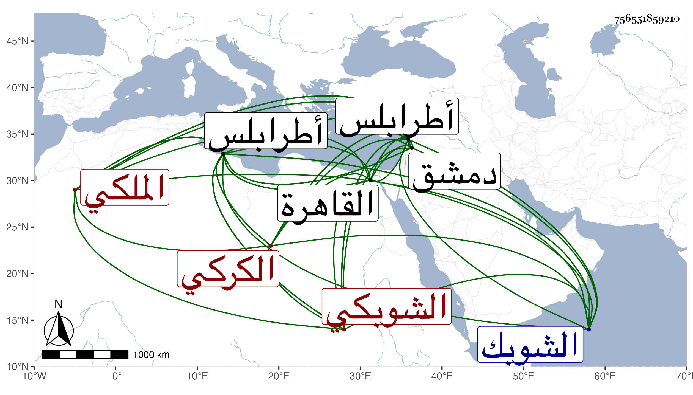

0902Sakhawi.DawLamic.ITO20230111-ara1.EIS1600.756551859210
Biography ID: 756551859210
809
موسى بن يوسف الشرف بن الجمال بن الصفي الكركي الشوبكي الملكي الآتي أبوه ناظر جيش طرابلس وقريب الجمال ناظر الخاص . أصله من نصارى الشوبك ونشأ في كنف أبيه وتعانى الكتابة إلى أن ولي نظر جيش طرابلس مدة ثم صرف عنها وسار إلى أبيه بدمشق بعد أن قدم القاهرة وبذل ما ألزم به وهو شيء كثير واستمر عند أبيه حتى مات البهاء بن حجي فاستقر عوضه في نظر جيشها على مال بذله فلم تشكر سيرته وعزل عن قرب وأعيد لنظر جيش طرابلس بسعيه فيه لما له من الأملاك وغيرها فدام حتى مات بها في رجب سنة اثنتين وستين وقد تكهل وخلف مالا كثيرا جدا وأكثر من عشرة أولاد تولى أكبرهم مكانه ويقال أنه كان من قبائح الزمان ومع قربه من دين النصرانية وقبح شكله كان سيء الخلق زائد الزهو والترفع عفا الله عنه ورحم المسلمين وإيانا .
